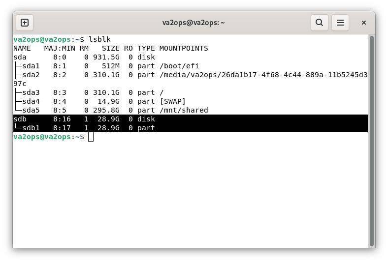
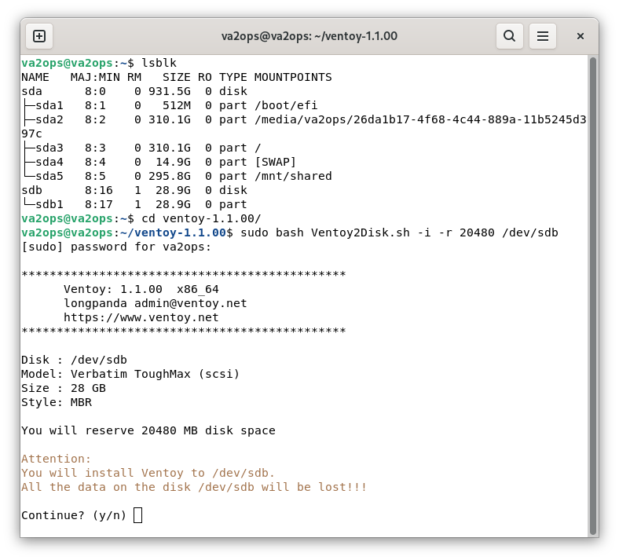
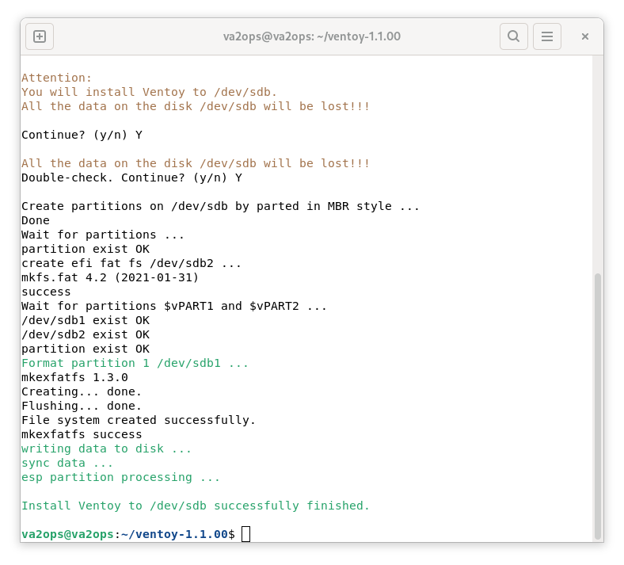
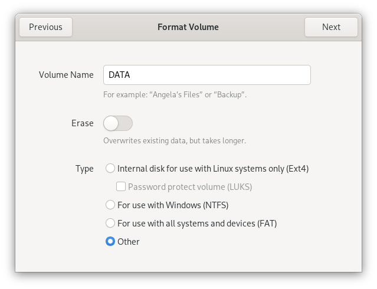
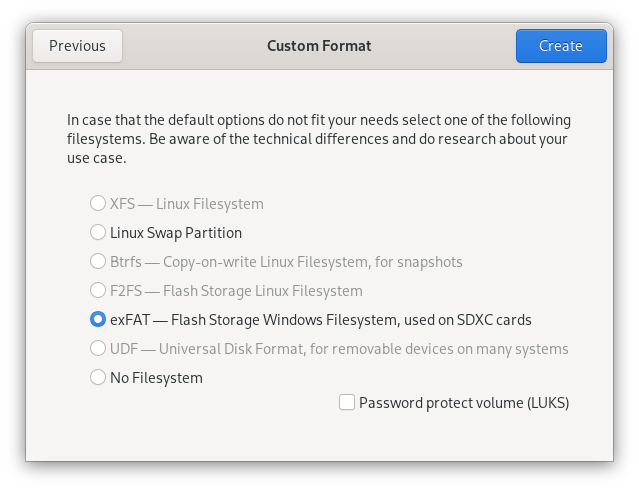
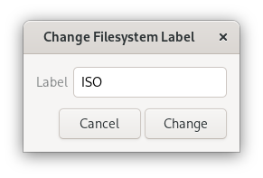
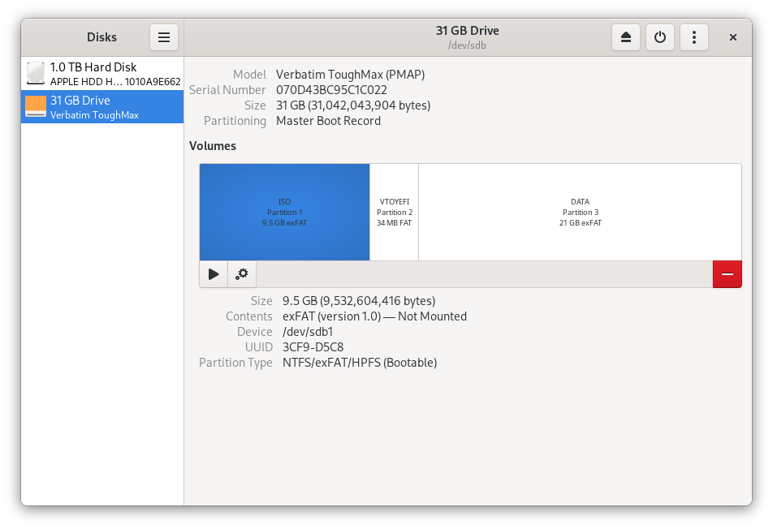

This guide walks you through the complete Linux setup process: installing Ventoy on your USB key with reserved space, then using GNOME Disks to create and label the ISO and DATA partitions.
Part 1 — Install Ventoy
Identify your USB key with lsblk
Open a terminal and run lsblk. Look for your USB drive by size — in this example it is /dev/sdb, a 28.9 GB key. Double-check before proceeding — Ventoy will erase the entire drive.

Run Ventoy2Disk with reserved space
Navigate to the extracted Ventoy folder and run the install command with the -r flag to reserve space at the end of the disk. The value is in MB — 20480 reserves 20 GB for your DATA partition. Replace /dev/sdb with your actual drive.
sudo bash Ventoy2Disk.sh -i -r 20480 /dev/sdb

Confirm the install completed
Ventoy will ask for confirmation twice before erasing the drive. Once done, the output confirms Ventoy has been successfully installed. The reserved space is already set aside — no partition tool needed for that part.

Part 2 — Label ISO and Create DATA with GNOME Disks
Open GNOME Disks (search for "Disks" in your application menu). Select your USB key from the left panel.
Locate your USB key and the free space
You will see the large Ventoy partition (exFAT), a small VTOYEFI partition, and the Free Space block at the end — that is the 20 GB you reserved.
Create the DATA partition — name and format type
Click the Free Space block, then click the + button to create a new partition. In the Format Volume dialog, set the volume name to DATA and select Other as the type — this lets you choose exFAT in the next step.

Select exFAT and create the partition
In the Custom Format dialog, select exFAT — Flash Storage Windows Filesystem and click Create. exFAT ensures the DATA partition is readable and writable on Windows, Mac, and Linux without extra drivers.

Rename the Ventoy partition to ISO
Click the large Ventoy exFAT partition. Click the edit (pencil) icon → Edit Filesystem Label. Change the label from ventoy to ISO and click Change. No reformatting needed — Ventoy already created it as exFAT.

Verify the final layout
GNOME Disks now shows three partitions: ISO (exFAT, the main Ventoy partition), VTOYEFI (small boot partition), and DATA (exFAT). Your key is ready.

Final Step — Copy your ISO
Open the ISO partition in your file manager and copy your LiaisonOS ISO file into it. That is all — Ventoy scans the partition automatically at boot and presents every ISO it finds in the boot menu.
Your key is ready. Boot from it and LiaisonOS will start directly — no installation required.